Paříž: bez mapy (nahoře, modře) a s mapou Plan de voirie (dole, červeně)
Řez zleva (A) doprava (B), ±10 m podél ulice, 10 px = 1 m. Silné čáry = okraje vozovky, tenké = ostatní hranice, žlutá = střed řezu, * = odhad. Ortofoto © IGN.
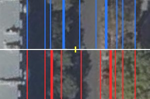
pa1 · Rue Crozatier (paris)
bez mapy Paříže: chodnik 3.61 · stromorad 1.14 · zelen 2.6 · pruh 3.3 · pruh 3.3 · parkovani 2 · zelen 2.2 · stromorad 1.15 · chodnik 2.52
s mapou Paříže: chodnik 3.61 · stromorad 1.29 · parkovani 2 · pruh 3.97 · pruh 3.97 · parkovani 2 · chodnik 0.95 · stromorad 1.5 · chodnik 2.52
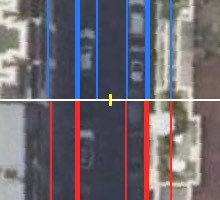
pa2 · Rue Louis Codet (paris)
bez mapy Paříže: chodnik 2.9 · parkovani 2 · pruh 3 · parkovani 2 · chodnik 2.4
s mapou Paříže: chodnik 2.65 · pruh 4.85 · parkovani 2 · chodnik 2.5
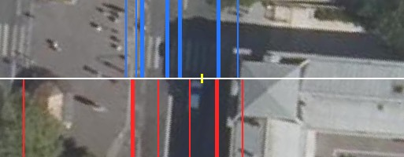
pa3 · Boulevard Marguerite de Rochechouart (paris)
bez mapy Paříže: zelen 1.27 · nezname 0.7 · pruh 3.2 · delici 1.6 · pruh 4.9 · chodnik 2.5
s mapou Paříže: plocha 13.75 · krajnice 3.35 · pruh 4 · krajnice 3.35 · chodnik 3.35
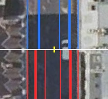
pa5 · Rue Jacob (paris)
bez mapy Paříže: chodnik 2.25 · pruh 4.2 · parkovani 2 · chodnik 1.8
s mapou Paříže: chodnik 1.6 · parkovani 2 · pruh 3.05 · parkovani 2 · chodnik 1.6
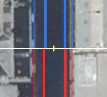
pa7 · Rue de Verneuil (paris)
bez mapy Paříže: chodnik 2.25 · pruh 4 · chodnik 1.65
s mapou Paříže: chodnik 1.95 · pruh 4.4 · chodnik 1.45
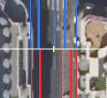
pa9 · Rue Godot-de-Mauroy (paris)
bez mapy Paříže: chodnik 1.6 · pruh 3.4 · parkovani 2 · chodnik 2.4
s mapou Paříže: chodnik 1.7 · pruh 4.5 · parkovani 1.8 · chodnik 1.2
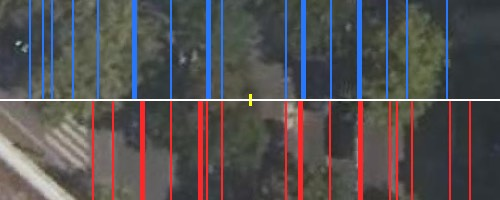
pa10 · Avenue du Président Wilson (paris)
bez mapy Paříže: plocha 1.26 · stromorad 0.97 · chodnik 2.05 · stromorad 2.5 · bus_cyklo 3.67 · pruh 3.67 · pruh 3.67 · stromorad 1.42 · plocha 6.39 · stromorad 1.69 · pruh 2.8 · pruh 2.8 · bus_cyklo 2.8 · stromorad 2 · chodnik 4
s mapou Paříže: chodnik 2.05 · bus_cyklo 2.88 · pruh 2.88 · pruh 2.88 · plocha 0.72 · stromorad 1.5 · plocha 6.39 · stromorad 1.44 · pruh 3 · pruh 3 · bus_cyklo 3 · chodnik 0.7 · stromorad 1.5 · chodnik 3.75 · plocha 2.02
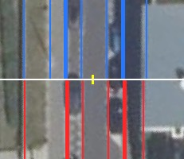
pa11 · Rue Clisson (paris)
bez mapy Paříže: zelen 3.27 · chodnik 1.95 · parkovani 2 · pruh 3.2 · parkovani 2 · chodnik 2.95
s mapou Paříže: chodnik 5.3 · parkovani 2 · pruh 3.25 · parkovani 2 · chodnik 2.4
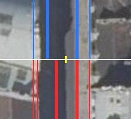
pa12 · Rue des Tournelles (paris)
bez mapy Paříže: chodnik 2.25 · pruh 5 · chodnik 2.25
s mapou Paříže: plocha 0.65 · chodnik 3.15 · pruh 3.5 · chodnik 2.05
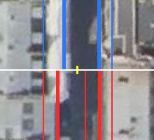
pa13 · Rue Malar (paris)
bez mapy Paříže: chodnik 2.85 · pruh 5 · chodnik 1.9
s mapou Paříže: chodnik 1.95 · pruh 4.05 · parkovani 2 · chodnik 1.75
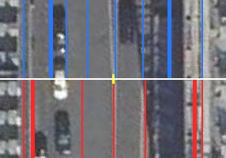
pa15 · Rue de Castiglione (paris)
bez mapy Paříže: chodnik 3.4 · parkovani 2 · krajnice 2.72 · pruh 3.5 · pruh 3.5 · krajnice 3.28 · chodnik 4.15
s mapou Paříže: chodnik 1.15 · krajnice 6.23 · pruh 4 · pruh 4 · krajnice 6.23 · chodnik 0.95
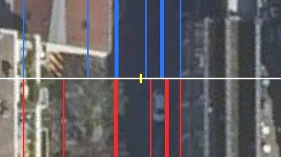
pa16 · Rue du Chemin Vert (paris)
bez mapy Paříže: zelen 8.2 · chodnik 3.6 · pruh 3.8 · parkovani 2 · chodnik 2.35
s mapou Paříže: plocha 5.1 · chodnik 6.6 · pruh 4.5 · parkovani 2 · chodnik 1.75
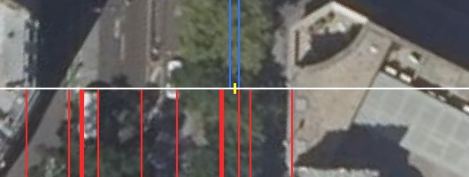
pa18 · Boulevard de Magenta (paris)
bez mapy Paříže: cyklostezka 1
s mapou Paříže: chodnik 4.75 · cyklostezka 1.4 · parkovani 1.9 · krajnice 4.95 · pruh 4 · krajnice 4.95 · chodnik_kola 2.05 · cyklostezka 1.3 · chodnik 4.7
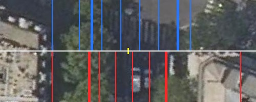
pa19 · Avenue de Villiers (paris)
bez mapy Paříže: chodnik 5.3 · zelen 2.4 · parkovani 2 · pruh 3.7 · pruh 3.7 · pruh 3.7 · pruh 3.7 · chodnik 2.5
s mapou Paříže: chodnik 7.2 · parkovani 2 · pruh 3.26 · pruh 3.26 · pruh 3.26 · pruh 3.26 · chodnik 14.58
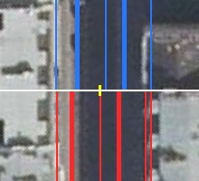
pa20 · Rue Chevert (paris)
bez mapy Paříže: chodnik 2.25 · pruh 3.2 · parkovani 2 · chodnik 3
s mapou Paříže: chodnik 1.6 · pruh 3.25 · parkovani 2 · chodnik 3 · plocha 0.55
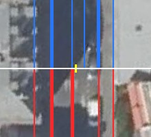
pa21 · Rue Amelot (paris)
bez mapy Paříže: chodnik 2.45 · pruh 3.02 · cyklopruh 1.78 · parkovani 2 · chodnik 2.25
s mapou Paříže: chodnik 2.45 · pruh 3.05 · cyklostezka 3.9 · chodnik 2.1
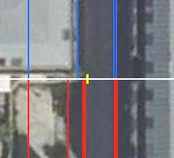
pa22 · Passage Sainte-Anne Popincourt (paris)
bez mapy Paříže: plocha 6.15 · chodnik 4.6 · plocha 0.35
s mapou Paříže: plocha 5 · chodnik 2 · pruh 3.95
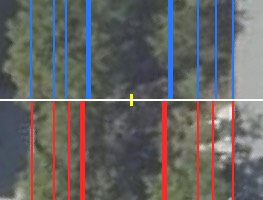
pa25 · Rue Perrée (paris)
bez mapy Paříže: chodnik 2.34 · stromorad 1.21 · zelen 2.2 · pruh 8.2 · chodnik 2.8 · stromorad 1.8 · plocha 1.65
s mapou Paříže: chodnik 2.19 · stromorad 1.5 · chodnik 1.31 · pruh 8.15 · chodnik 3.45 · stromorad 1.5 · chodnik 1.95
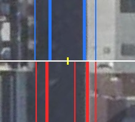
pa28 · Rue Léon Jost (paris)
bez mapy Paříže: chodnik 2.35 · pruh 5.6 · chodnik 1.9
s mapou Paříže: chodnik 1.65 · pruh 4.6 · parkovani 2 · chodnik 1.4
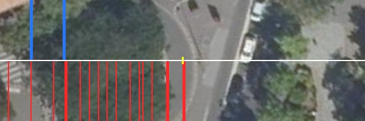
pa29 · Place des Alpes (paris)
bez mapy Paříže: pruh 5.35
s mapou Paříže: chodnik 4.77 · stromorad 0.9 · parkovani 2 · pruh 3.7 · pruh 3.7 · pruh 3.7 · parkovani 2 · plocha 2.39 · stromorad 1.54 · stromorad 1.5 · plocha 1.37 · stromorad 1.5 · plocha 2.32 · stromorad 1.5 · plocha 0.6 · stromorad 1.5 · plocha 2.53 · pruh 2.69
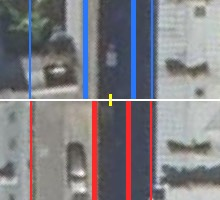
pa30 · Rue du Petit Musc (paris)
bez mapy Paříže: chodnik 5.45 · pruh 4.8 · chodnik 1.95
s mapou Paříže: chodnik 6.3 · pruh 3.45 · chodnik 2.25
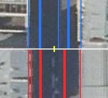
pa32 · Rue Alain Chartier (paris)
bez mapy Paříže: chodnik 2.3 · pruh 3.8 · parkovani 2 · chodnik 2.65
s mapou Paříže: plocha 0.65 · chodnik 1.75 · pruh 4.95 · chodnik 3.25
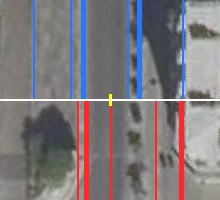
pa35 · Rue Mondétour (paris)
bez mapy Paříže: zelen 3.65 · chodnik 1.2 · pruh 4.5 · krajnice 1.1 · chodnik 4.45
s mapou Paříže: chodnik 0.75 · krajnice 2.5 · pruh 4.5 · krajnice 2.5
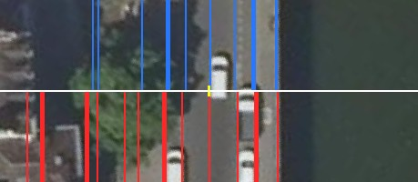
pa36 · Quai aux Fleurs (paris)
bez mapy Paříže: stromorad 0.61 · zelen 4.75 · chodnik 2.8 · parkovani 2 · pruh 2.7 · pruh 2.7 · parkovani 2 · chodnik 2.5 · nezname 0.12
s mapou Paříže: chodnik 1.55 · pruh 4.95 · chodnik 1.15 · stromorad 3 · zelen 1.55 · chodnik 2.8 · parkovani 2 · pruh 3.02 · pruh 3.02 · parkovani 2 · chodnik 2.45
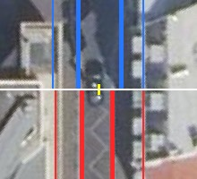
pa37 · Rue Raymond Losserand (paris)
bez mapy Paříže: chodnik 2.8 · pruh 4.8 · chodnik 2.5
s mapou Paříže: chodnik 2.95 · pruh 3.4 · chodnik 3.45
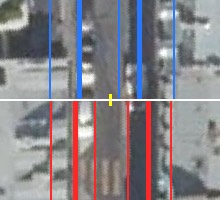
pa38 · Rue de la Banque (paris)
bez mapy Paříže: chodnik 2.85 · pruh 4 · parkovani 2 · chodnik 3.55
s mapou Paříže: chodnik 2.4 · parkovani 2 · pruh 3.25 · parkovani 2 · chodnik 2.3
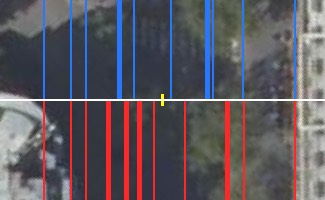
pa39 · Avenue de la Bourdonnais (paris)
bez mapy Paříže: chodnik 2.68 · stromorad 1.5 · chodnik 3.29 · cyklopruh 1.5 · pruh 3.65 · pruh 3.65 · zelen 0.6 · stromorad 3 · chodnik 5.15
s mapou Paříže: chodnik 2.68 · stromorad 1.5 · chodnik 2.19 · pruh 1.75 · cyklostezka 1.35 · cyklopruh 1.5 · pruh 3.12 · pruh 4.12 · stromorad 1.78 · chodnik 5.02
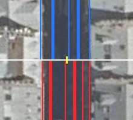
pa40 · Rue de Cléry (paris)
bez mapy Paříže: chodnik 2 · pruh 2.7 · cyklopruh 1.5 · chodnik 1.95
s mapou Paříže: chodnik 1.3 · pruh 2.55 · cyklopruh 1.5 · cyklostezka 1.35 · chodnik 1.15